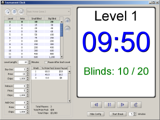
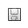

Nowadays, lots of people enjoy getting together with friends to play in their own home poker tournaments for fun. To help you organize and efficiently manage these tournaments, Poker Academy provides a Home Tournament Clock.
Poker Academy's Home Tournament Clock makes it easy for you to keep track of all the essential tournament information: the blinds and levels, the prize payouts, the number of players entered and their buy-ins. With all these great features, you can make sure your home tournaments go as smoothly as the tournaments in the casinos do.
The Home Tournament Clock is a separate program which you can start from Poker Academy's Main Lobby or from its Window menu. When the clock is first opened you will see four main areas: the blind structure, buy-in/add-on/rebuy data, the payout structure, and a tournament level timer with controls.

Poker Academy's Home Tournament Clock ships with some default tournament blind structures that you can choose between or edit. To choose one of these structures, use the pull-down structure chooser at the top of the window.
When the Home Tournament Clock is run for the first time, a bare bones initial structure is selected by default. Each subsequent time you open the Home Tournament Clock, the last structure you chose will be automatically selected and loaded.
Along with the structure chooser there are five toolbar buttons:
| Creates a new structure that you can name and edit. | |
| Deletes the currently selected structure. | |
|  | Saves the currently selected structure to disk. |
|
|
Adds a new level to the current structure. If you have a row selected, that row will be duplicated. If no levels are selected, a level will be added to the end of the structure. |
| Deletes the selected level(s) from the structure. If no row is selected, the delete button will be disabled. |
To edit the current tournament structure, double-click on the table cell you wish to update, and change the value. You may adjust the values of antes, small blinds, or big blinds in any of the structures you choose.
When you make an error editing the structure, the invalid cells will be highlighted in red to alert you to the problem. Errors can exist when you make an ante bigger than the small or big blind, or make the small blind bigger than the big blind for a single level. Errors can also exist when the blinds decrease from one level to the next in the structure. For a tournament, the blinds should increase from level to level or sometimes they may remain the same.
Below the blind structure table is the level length control. You can change the number of minutes that each level will take by adjusting the spinner. You may also adjust the spinner while the clock is running and the setting will take affect on the next round. For example, you want the first four levels of your tournament to be 15 minutes long, and every level after that to be 20 minutes long. To set this up, simply set the level length to 15 minutes and start your tournament clock. After level four has started and the clock is counting down the 15:00 minutes you can adjust the level length to 20 minutes and when level 5 starts the clock will begin using a 20:00 minute timer.
If you have pause after each level option selected, the clock will pause when a level is complete and wait for you to start the timer to begin the next level.
On the left-side of the Home Tournament Clock under the level structure table, there are entry fields which you can use to keep track of information regarding players' buy-ins, rebuys, and add-ons. Entering this information allows the tournament clock to automatically track the prize pool of the tournament which is in turn used to automatically compute your desired tournament payouts. In addition, the tournament clock will also use this information to keep track of the total number of chips in play.
The buy-in entry fields allow you to specify the number of players buying in to play in your tournament, the price each person is paying to buy-in, and the number of chips each player gets for a buy-in.
The rebuy entry fields let you keep track of the number of players that purchased rebuys, the cost of a rebuy, and the chips given per rebuy.
The add-on entry fields let you keep track of the number of players that purchased add-ons, the cost of an add-on, and the chips given per add-on.
Values entered into these fields are automatically remembered by the Home Tournament Clock and will be automatically loaded on subsequent startups (except for the number of rebuys and add-ons which are automatically reset to zero on each startup).
The Tournament prize payouts table lets you customize the values of prizes paid out in your home tournament. The number of payout rows in the payout table are automatically adjusted to equal the number of players buying into your tournament which is set by the buy-in entry field. This helps to make sure that you cannot accidentally provide payouts to more people than those who entered your tournament.
When you increase the number of player buy-ins, and the prize pool is fully allocated, each subsequent entry will receive a 0% payout. If the entire prize pool has not been fully allocated, each additional buy-in and subsequent payout row added will automatically be given a payout value. This payout value corresponds to the prize pool amount left to be paid and the value of the previous payout entry. Adding payouts automatically in this manner ensures that the prize pool is never over-allocated, and that the size of the payouts never increase as players finish in worse spots.
To adjust a payout value simply double-click to edit the desired table cell. If you adjust the '% Prize Pool' value, the gross payout will be automatically updated and vice versa.
When you make an error editing the values in the payout table, the cells will be highlighted with different colors to denote the different errors. Green highlighting means that the current payout table entries do not give out 100% of the prize pool. You can find the percentage still left to allocate by mousing over the payout table and reading the value in the tool tip. Red highlighting means you have allocated more than 100% of the prize pool and you need to remove a certain % from the payout table. Again, you can find this percentage by holding the mouse over the payout table and reading the percentage in the tool tip that will appear. Orange highlighting means that the highlighted payout entries are inconsistent. That is, a higher placed finisher will receive less money than a lower placed finisher.
The values in the payout table are automatically updated whenever more money enters the prize pool through buy-ins, rebuys or add-ons. Below the prize pool there are some basic summary stats about your tournament including the total prize pool, and total chips in play.
On the right-hand side of the Home Tournament Clock is a large timer panel. This panel displays the current level, the time left, and the current blinds. Below this display information are the clock controls:

|
Starts the level timer. Once the timer is started, the play button changes to a pause button. |

|
Pauses the level timer. Once the timer is paused, the pause button changes to a play button. |
| Takes the tournament clock back to the start of the previous blind level. This resets the level timer and pauses the timer. | |

|
Takes the tournament clock to the start of the next blind level. This resets the level timer and pauses the timer. |
| Resets the Home Tournament Clock timer and levels. Once the tournament clock is started, the tournament's level structure is considered locked, and you can only choose a new structure or edit the current one after using this button to reset the clock. |
The Start Break button just below the clock controls starts a break timer for the given number of minutes specified. To change the length of the break simply adjust the number of minutes before pressing the Start Break button. You can start the break at any time once the clock has been started. If you start a break during the middle of a level, the level will pause, and the timer will be restored once the break has been completed. If you wish to stop a break before it is complete simply press the Stop Break button, which replaces the Start Break button when the break timer is started.